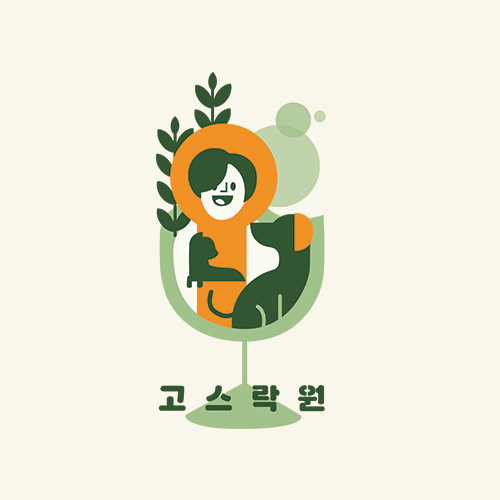

어비슬립[ABYSSLEEP]은 현대인들의
수면 건강 관리를 통한 삶의 질 향상을 목적으로 기획되었으며
물고기를 잡고 수조를 꾸미는 게임형식과
꾸준한 어플 사용시 얻을 수 있는 포인트로
기프티콘을 얻을 수 있는 보상 형식을 도입하여
사용자의 흥미를 유발하고 지속적인 수면관리를
할 수 있게 하였다.

Multimedia Design고스락원
'고스락원'은 시니어의 신체적 문제, 사회적 문제, 심리적 특성 등
여러 가지 문제점에 도움을 줄 수 있는 반려 식물들과 술집의 결합으로
즐겁고 건강한 음주생활, 다양한 문화생활, 건강 케어까지 받을 수 있는 시니어를 위한
시니어들의 새로운 음주문화생활공간입니다.
Moving Image Animation graduaEAT
다양한 재료를 사용하여 요리를 만들어 내는 것과
우리가 졸업을 하는 과정이 비슷하다고 생각했다.
[graduaEAT]은 우리가 졸업하는 과정을 요리로
보여주는 스톱모션 애니메이션이다.